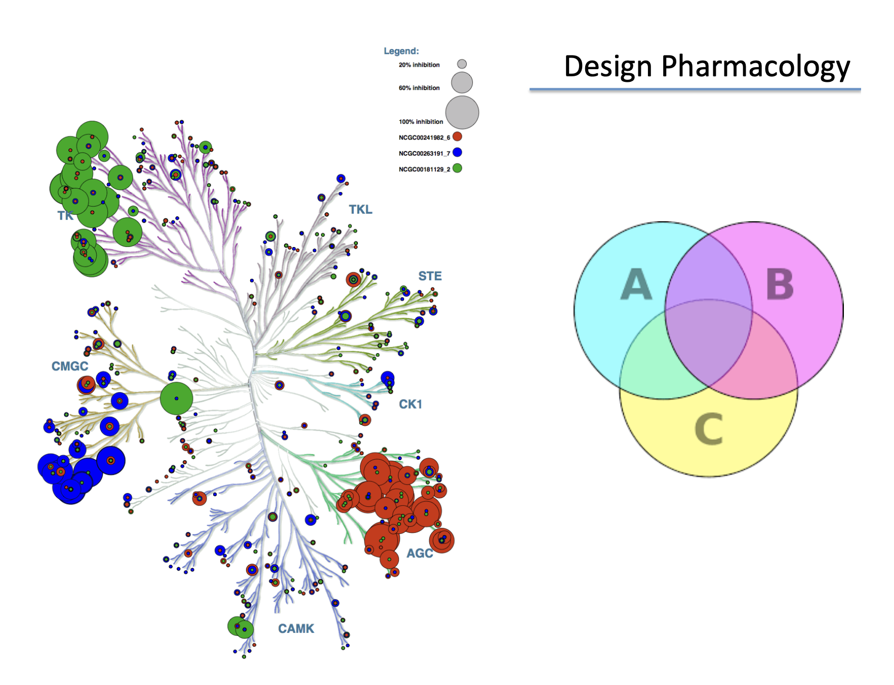

Drug Discovery / Computational Chemistry Experience
During summer 2020, I worked on developing different analytical tools which are important part of the drug discovery process. I helped to develop analytical methods capable of identifying functional relations between drug chemical structure and biological properties in large datasets. I performed the analysis by screening large libraries of compounds to identify lead compounds. I developed a predictive model that automates feature selection. I use a CNN method with features represented by both 1-D smiles and standard RDKit fingerprints. I tested our method with curated datasets to predict mutagenicity, β Secretase 1 (BACE-1) inhibitors, Cytochrome P450-drug interactions, and compound toxicity from the TOX21 Data Challenge 2014. I received the following feedback from the management:
Zhijing helped us to develop different analytical tools which are important part of the drug discovery process. As a part of our research plan, this research will be continued to make analysis of small molecular suitable to treat different diseases. I hope continuing the collaboration with Jimmy.
The deep learning ability to learn from real-world data during drug discovery process makes these technologies uniquely situated for drug screening process. At any stages of developing our deep learning method, we develop approach for Uncertainty Analysis and Quantifications (UQ). We are developing approach which converges ML based learned models with model-based predictions so that all numerical and experimental data can help self-inform predictions. This allows effective building of UQ into a cognitive computing.
We include general guidance for how to effectively use deep learning to select few candidates that exhibit the desired biological and physicochemical properties. Our deep learning methods were trained and optimized to achieve high prediction accuracy for early-stage screening datasets.
